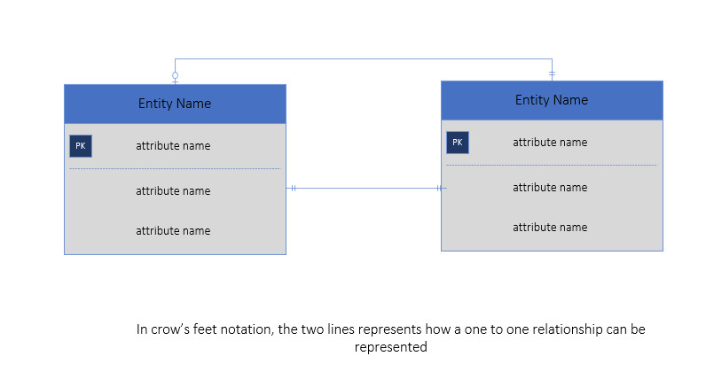

There are three kinds of relationships, namely: one to one, one to many, and many to many relationships. On this website, we will be using crow's foot
notation to represent these types of relationships. Crow's foot notation diagram represents entities as boxes and relationships as lines between the boxes. Different crow's feet at the
end of the lines represent the relative cardinality of the relationship. Cardinality refers to the number of allowed instances of the relationship.
One-to-one

In a one-to-one relationship, one record(row) in a table(entity) is associated with one or no more than one related record in the other table.
One-to-one relationships can be rare, but also useful in certain scenarios. This relationship is used to class/subclass relationship
One-to-many
In a one-to-many relationship, each record can have record can be associated to many records in the other table.
Many-to-many
A many-to-many relationship means that mutliple records are associated with multiple records in the related table.